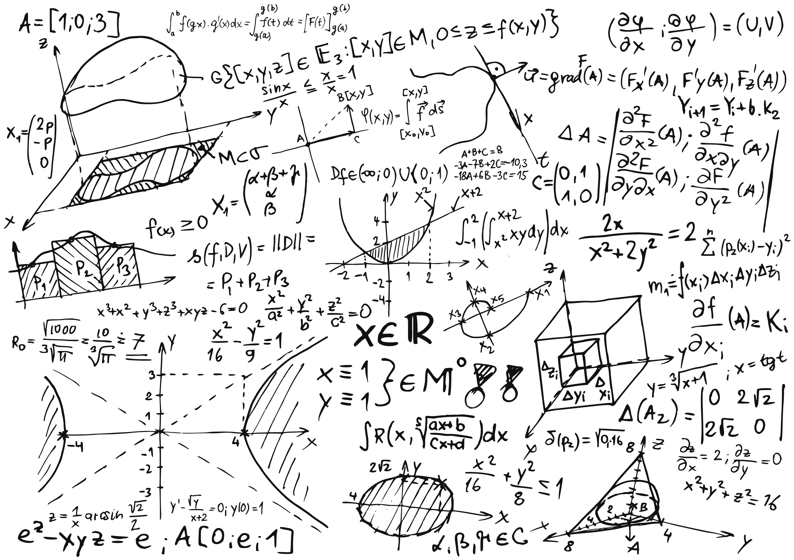

S'adresse principalement aux filles en Paces à Brest qui s'appelle Florence
Voir la première raison !Parcequ'à la base, je t'ai, je pense, toujours respecté entièrement... Et le fait que tu passes de la fille avec qui je délire sur snap à la fille qui ne me répond plus sans explication, pour finalement me dire qu'il vaut mieux qu'on arrête (ce que je comprends), mais ce silence soudain à mes messages donne de toi l'image que tu déconsidères totalement le maigre temps qu'on a passé ensemble... Comme si tu t'en foutais... Qu'il ne s'était rien passé, qu'on ne se connaissait pas... Bref que t'as tout effacé en deux deux...
J'ai quand même espoir que c'est juste une illusion car ce n'est absolument pas l'image que j'ai de toi... Mais en vrai éviter le dialogue ce n'est pas la meilleure solution je pense :/
Bon promis, à partir du conseil suivant, je ne te fais plus de remarque pas cool, mais ça m'a quand même blessé cette façon de faire...
Wesh vas-y parles moi bien pour la suiteEt ce site le prouve... ;) Bon à la base j'ai hésité a le faire... D'ailleurs ce site ne sert peut être a rien, car même après l'avoir lu tu ne voudras peut être toujours pas me parler.
Ce qui veut dire que si même tu ne lis pas jusqu'ici, je peux écrire des trucs bizarre du style "Je suis une choucroute". Ou "J'aimerais bien voyager en licorne, ça a toujours été ma passion" ou bien encore "Faut que je t'avoue que je sors de l'HP il y a deux heures"... Bref c'est géniale, d'écrire ce qu'on veut !:D
Mouai je suis toujours pas convaincuParceque tu n'es pas convaincu qu'il faut me reparler encore jusqu'ici, je te montre une petite démo :

Comme tu peux le voir sur cette démo, c'est scientifiquement prouvé que si tu ne me parles plus, tu risques d'avoir une grande malédiction de la mort-qui-tue :( (car il existe des morts qui ne tuent pas tout le monde le sait...)
En faite, je crois que t'es réèllement taré... Donne moi la prochaine raison !Et du coup, ça serait inutile dans faire 12...
Mais du coup, ce top 12 mais 4 était une parodie de ton top 12 que t'as mis sur ton facebook.
En vrai je vais pas me plier en quatre non plus... , mais pour être honnête, je ne m'embetterais pas à faire un tel site comme ça si je m'en foutais vraiment de toi.. C'est juste que ça me fait vraiment trop chier qu'on ne se parle plus juste "Parceque t'es en Paces" alors que tu parles bien a des gens dans la vie Non ?
Bref tous ça pour te dire que je tiens quand même un peu à toi et je te considère et si c'est réciproque, ben c'est vraiment bête de stopper la...
Peace, amour, gloire, beauté, chandelier et licornes (Pourquoi ? Je sais pas...!)